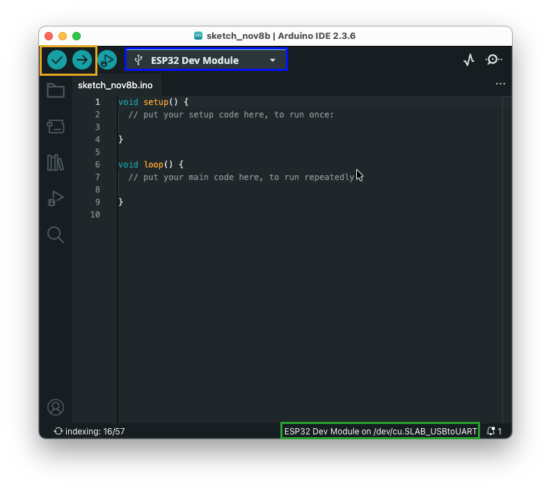

Working with ESP32 devices¶
Overview¶
The ESP32 is a powerful microcontroller with built-in touch capabilities, making it ideal for physical computing projects. In this section, we will cover the basics of working with ESP32 devices, including setting up the development environment, programming the device, and interfacing with various input and output components.
Gather the hardware components¶
-
ESP32 Development Board

-
USB Cable (for programming and power)

-
Computer for programming the ESP32 and applications
Setting Up the Development Environment¶
We want to program the ESP32 using the Arduino IDE. Therefore, we need to install the Arduino IDE and set it up for ESP32 development.
Installing or Updating the Arduino IDE¶
- Download the latest version of the Arduino IDE from the official Arduino website. Choose the version that matches your operating system (Windows, macOS, or Linux). This guide has been written using Arduino IDE version 2.3.6 on MacOS.
Installing USB to Serial Drivers¶
Check if your board has a built-in USB to Serial converter. Most ESP32 boards use the CP210x or CH340 chip for USB to Serial communication. If your board uses one of these chips, you may need to install the appropriate drivers.
Here is an image of the CP210x chip:

You can download the USB to Serial drivers from the Silicon Labs website: Silicon Labs USB to UART Bridge VCP Drivers. Choose the appropriate driver for your operating system (Windows, macOS, or Linux) and follow the installation instructions provided on the website. Note that under Windows the VCP driver worked better that the universal one.
Installing the ESP32 Board Package in Arduino IDE¶
- Open the Arduino IDE.
- Go to
File>Preferences(on macOS,Arduino>Settings). -
In the "Additional Boards Manager URLs" field, add the following URL (if there are already URLs in the field, separate them with a comma):
-
Click "OK" to close the Preferences window.
- Open the Boards Manager by going to
Tools>Board>Board Manager. - In the Boards Manager, search for "ESP32" and install the "ESP32 by Espressif Systems" package. When writing this guide, the latest version is 3.3.3.
Selecting the ESP32 Board and Port¶
After installing the ESP32 board package, use the "Select board" dropdown to choose your specific ESP32 board model from the list.
- For the ESP32-Wroom-32, select "ESP32 Dev Board".
- Select the serial port on the right hand side.
On Windows it should look like:

Your IDE (MAC) after selection should now look similar to this:

It shows the selected board "ESP32 Dev Module" (blue rectangle) and the port "/dev/cu.SLAB_USBtoUART" (green rectangle; this may vary depending on your system). In the center you see the code editor where you can write your sketches. On the top left you find buttons (orange rectangle) to verify (check mark) and upload (right arrow) your code to the ESP32.
Your IDE (Windows) after selection should look like:

Eventually, it is necessary to set the Baud rate to 115200. You can do this by going to Tools > Upload Speed and selecting 115200.
Writing Your First ESP32 Sketch: Blink the on-board LED¶
Edit the code editor to contain the following code:
int ledPin = 1; // the pin of the on-board LED
void setup() {
pinMode(ledPin, OUTPUT); // set pin 1 as output
}
void loop() {
digitalWrite(ledPin, HIGH); // sets pin to high voltage (ON)
delay(500); // wait half a second
digitalWrite(ledPin, LOW); // set pin to low voltag (OFF)
delay(500); // wait again
}
This code will blink the on-board LED of the ESP32 every second. But first we need to verify and then upload the code to the ESP32. Directly after uploading the on-board LED should start blinking.
Now you have successfully set up your development environment and programmed your ESP32 to blink an LED! You can now proceed to explore more complex projects and functionalities of the ESP32.
Control questions¶
- How can you modify the code to make the LED blink faster or slower?
- What happens if you unplug the ESP32 while the code is running? What do you observe when you plug it back in?